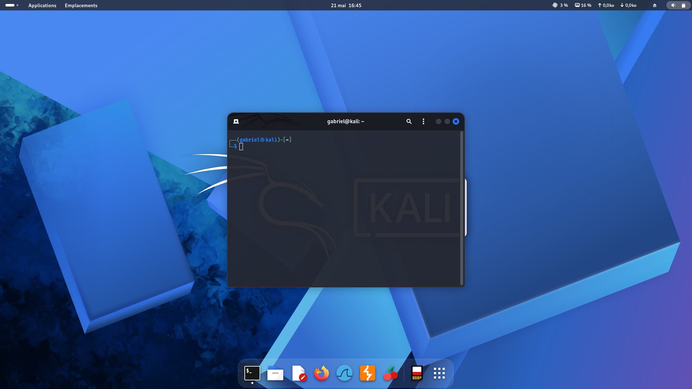
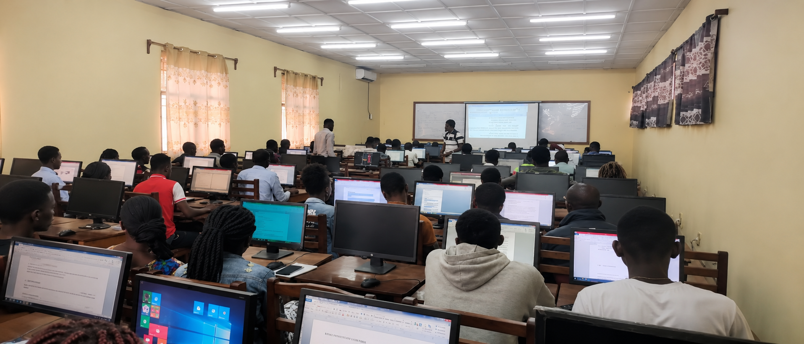
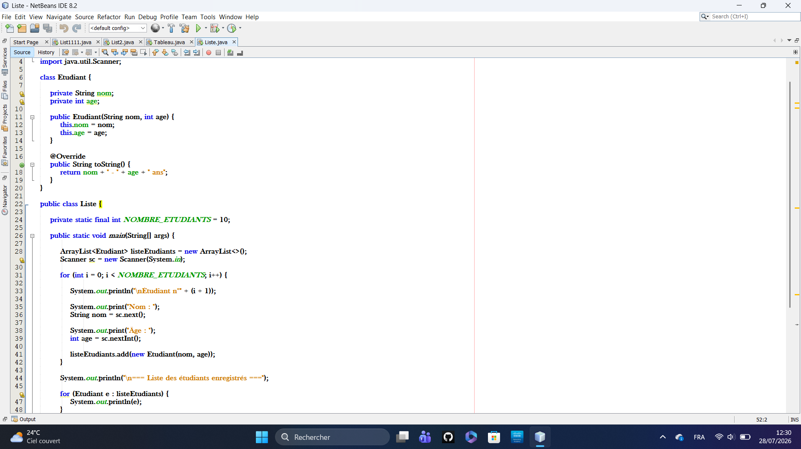
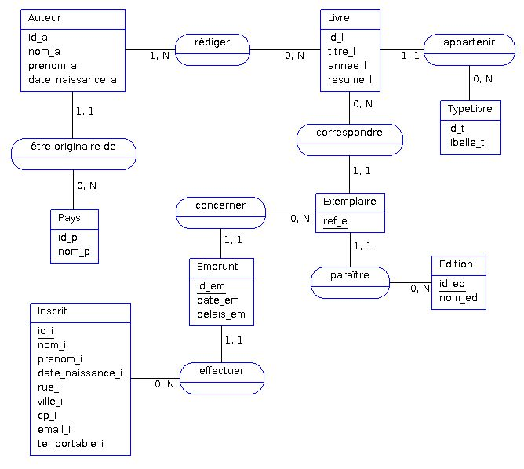
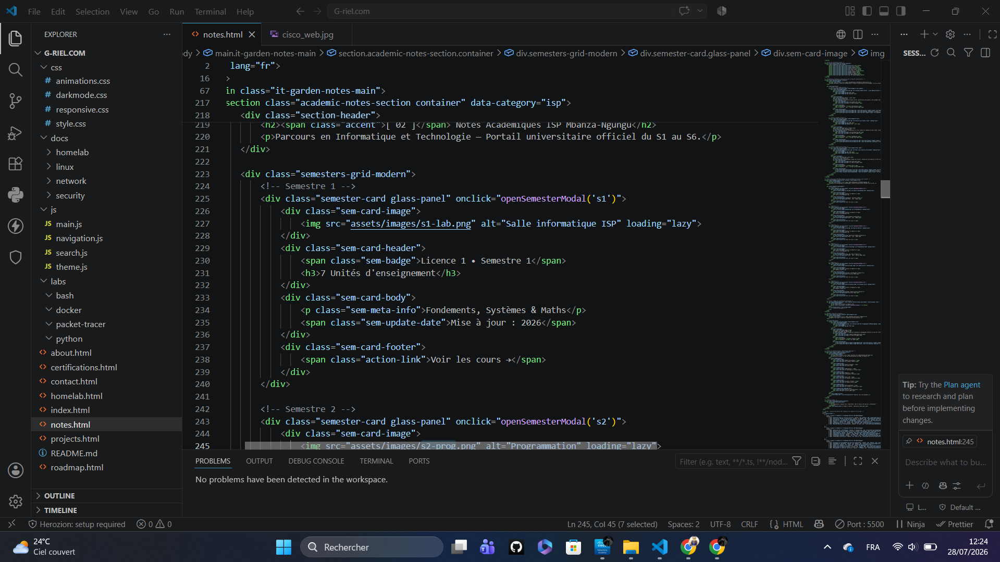

PDF
Ubuntu / Linux
Linux Administration
Ressource consacrée à l'administration de Linux, utilisée comme support complémentaire dans mon parcours d'apprentissage.
Cet espace rassemble une synthèse personnelle des enseignements suivis dans mon parcours en Informatique et Technologie, ainsi que les ressources associées à chaque matière. Les supports présentés peuvent avoir été transmis dans le cadre des enseignements ou recherchés personnellement comme ressources complémentaires.
Ressources techniques, supports d'apprentissage et laboratoires associés à mon parcours en informatique et technologie.
Ressource consacrée à l'administration de Linux, utilisée comme support complémentaire dans mon parcours d'apprentissage.

Support d'introduction aux notions essentielles des réseaux dans le cadre de mon apprentissage du programme CCNA.

Ressource d'introduction à Kali Linux et à son environnement, consultée pour approfondir mes apprentissages en cybersécurité.
Synthèse personnelle des enseignements suivis en Informatique et Technologie, organisée par semestre, avec les ressources associées lorsqu'elles sont disponibles.




Rapports et documents produits dans le cadre de mon parcours académique et de mes expériences pratiques.

Rapport présentant mon expérience de stage effectuée à l'Institut Technique Commercial Badika dans le cadre de mon parcours en Informatique et Technologie.
Quelques repères sur les ressources et documents actuellement référencés dans cet espace personnel.
« La connaissance s'acquiert par l'expérience, tout le reste n'est que de l'information. »